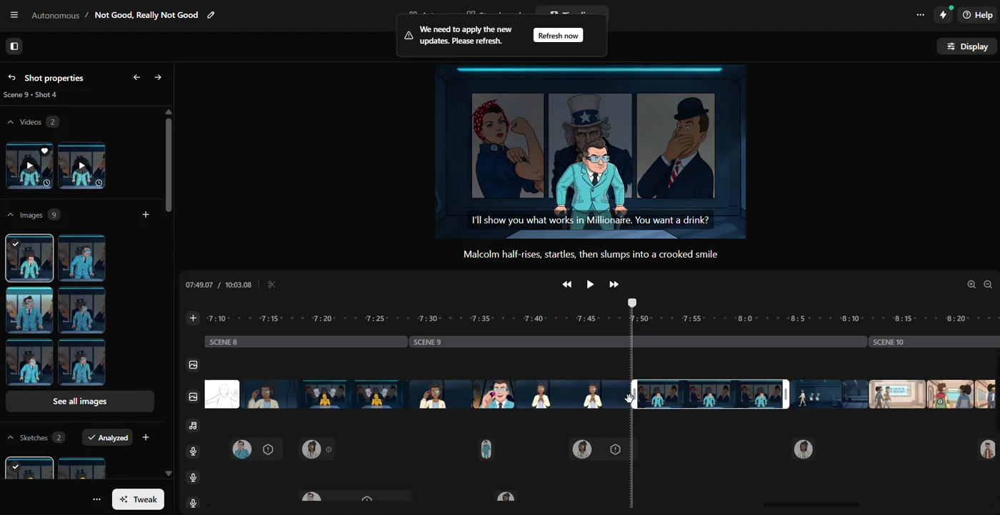
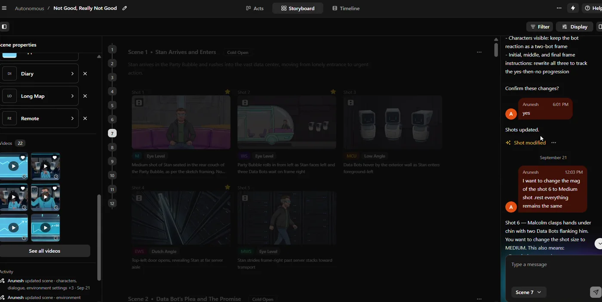
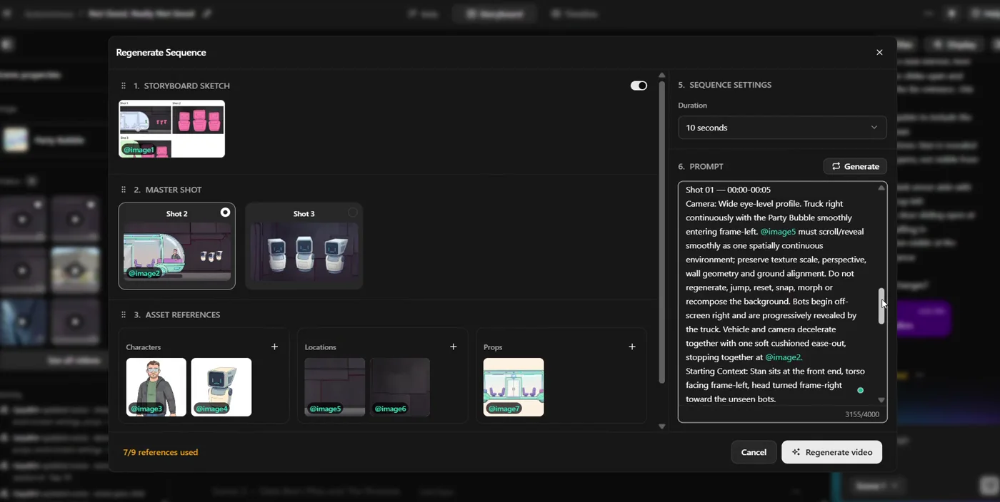
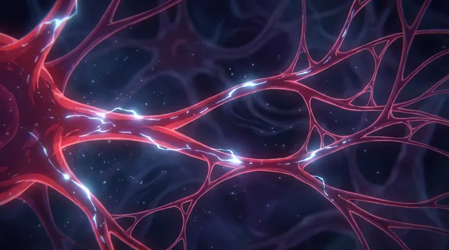

Nano Banana
Establish the initial visual language and high-level art direction.
BASE IMAGEI connect filmmaking judgment, model behaviour and creator-tool design—taking messy, real-world production problems from observation to a workflow teams can actually use.



My advantage is proximity to the failure. I understand what breaks when a generated shot enters a real sequence, what an editor needs at the timeline, and which constraints help—or suffocate—a model.
That lets me translate creator frustration into product behaviour, test it in active production, and return feedback that is specific enough to build from.
I helped shape an internal filmmaking tool from an unusable early product into a connected workflow for script breakdown, shot direction, storyboards, reference-controlled generation and timeline assembly.
The assistant understands the selected scene and shot, translates natural-language direction into affected fields, explains the proposed change, asks for confirmation, and updates the shot while protecting surrounding continuity.
Through repeated production testing, I separated style establishment, controlled revision and motion generation into different routes. The goal was not model loyalty; it was preserving intent with the fewest destructive passes.
Establish the initial visual language and high-level art direction.
BASE IMAGETargeted changes when composition and identity need to survive the edit.
LESS DEGRADATIONSkip an intermediate image when exact frame lock is not worth the cost.
FEWER PASSESInstead of throwing every image at the model equally, the workflow assigns responsibility: storyboard for framing and screen direction, master image for spatial continuity, identity sheets for character consistency, and environment references for world stability.
Reference hierarchy is product logic—not prompt decoration.

As the primary production user, I helped take the editor from basic import-and-drop behaviour to a scene-aware, multitrack tool capable of real assembly, revision and handoff.
A technical proof with too much friction for everyday production.
A connected workspace built around the actual decisions editors make.
I tested the product on active episodes, surfaced workflow blockers, and translated professional editing expectations into concrete product feedback. Each iteration was judged by whether it reduced friction in real assembly—not whether the feature merely existed.
The editor can package individual production assets, shot metadata, all content, a rendered MP4 timeline, or an XML timeline for continued work in a professional NLE.
I evaluate generative systems by what survives the full production chain.
Find the exact moment a creator loses time, control or confidence.
Separate prompt failure, reference conflict, model limitation and randomness.
Choose the model and level of constraint that suit the shot—not the habit.
Repeat under production conditions and judge continuity, editability and cost.
Approximate working ranges from active AI image and video production—not controlled laboratory benchmarks.
Prototype workflows, pressure-test tools and translate creative intent into product behaviour.
Evaluate image/video systems through structured human judgment and production-aware failure analysis.
Shape interfaces and flows for complex creative systems with stronger formal product-design practice.
I began in visual production and editing, then moved deeper into AI filmmaking, model behaviour and creator tooling. That production background is now the evidence layer behind how I think about products: precise enough for creators, legible enough for teams, and grounded in what happens after the demo.